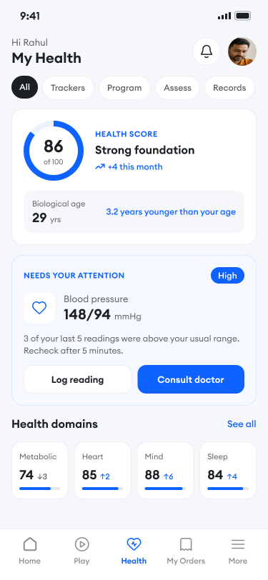
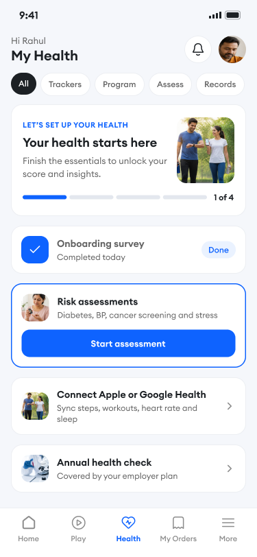
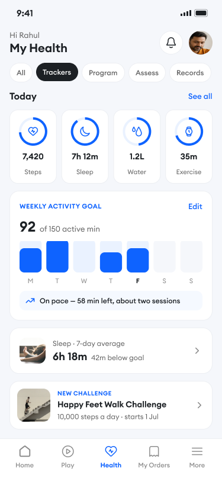
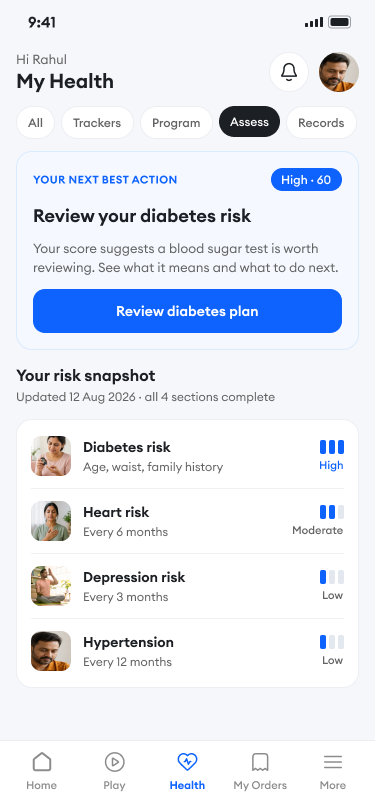
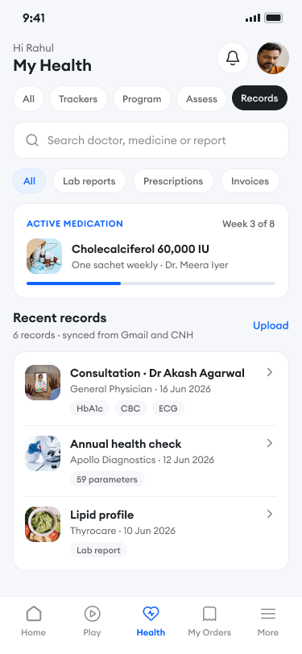
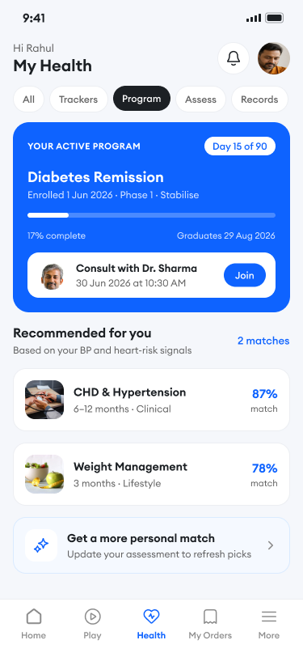
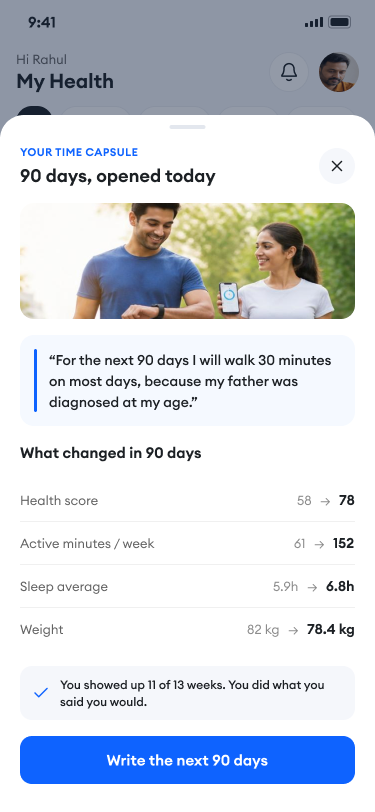

One thing needs attention
Only readings that repeatedly fall outside a member's usual range are surfaced, with a concrete next step: recheck, log or consult.
A mobile hub that brings a member's health score, daily trackers, risk checks, records and care programmes together — and always answers one question: what should I do next?
Lead product designer - information architecture and visual design
Employees and members covered by an employer health plan
Unify five data-heavy areas without overwhelming members or overstating clinical meaning
Concept and visual design for the next release.

My Health hub 2026
Information architecture, interaction design, visual design and prototyping
2026
Mobile app experience
Confidential
Scores, wearable data, risk questionnaires, lab reports, prescriptions and care programmes lived in separate parts of the product. Each was useful on its own, but together they asked members to do the hardest work: decide what matters today.
The goal was a single "My Health" hub that shows what is on track, what has changed and where to focus next — without turning health into a wall of numbers or colour-coded alarms.
I led the information architecture and visual design of the hub across its five tabs, the first-run setup experience, empty and error states, and the 90-day reflection moment. I defined the shared summary → action → detail rhythm so every team contributing a tab could plug into the same structure.
Every tab follows the same rhythm: a summary at the top, one prioritised action, then the detail. Members can enter from any tab and still understand where they are.
Only readings that repeatedly fall outside a member's usual range are surfaced, with a concrete next step: recheck, log or consult.
New members see four setup steps — survey, assessments, device sync, annual check — instead of an empty dashboard.
Weekly goals show pace ("58 minutes left"), and the 90-day capsule reflects on the member's own commitment.
The visual language uses one blue accent on neutral surfaces with real photography. Risk levels use a three-step level bar plus a text label, so meaning never depends on red, amber or green.







The same three-layer rhythm on every tab.
Scores and trends are framed as guidance; clinical calls route to a doctor.
Records and assessments are shared only with the member's care team.
The hub works because it says less. Choosing one next action per tab, and refusing to colour-code every number, made the experience feel supportive rather than clinical — while keeping a clear path to a doctor when something genuinely needs attention.
I’m always happy to talk about design leadership, healthcare products and design systems.